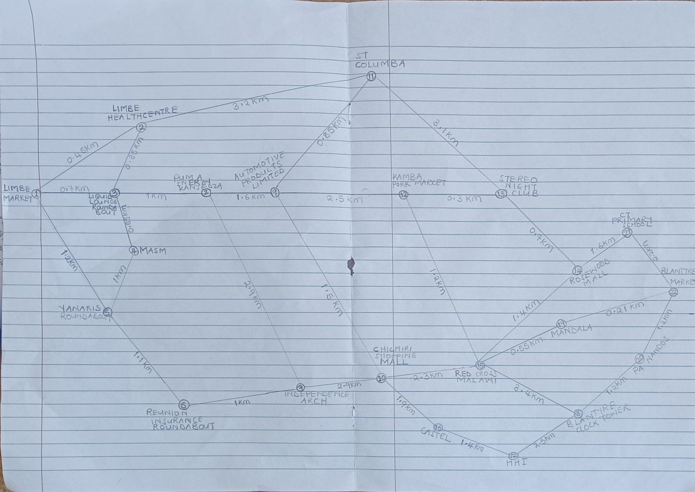

Data Structures and Algorithms · 2026 Assignment
A weighted graph of 22 places and 32 roads in Blantyre city, solved with Dijkstra's algorithm, Kruskal's algorithm and Prim's algorithm, implemented in C++ and deployed as a web application.
| # | Name | Registration number |
|---|---|---|
| 1 | [Member 1 full name] | [Registration number] |
| 2 | [Member 2 full name] | [Registration number] |
| 3 | [Member 3 full name] | [Registration number] |
| Source code | https://github.com/mse23-mkapolo-cpu/DSA |
|---|---|
| Live demo | https://mse23-mkapolo-cpu.github.io/DSA/ |
| Date | November 2026 |
Scenario. The graph models the roads of Blantyre city between Limbe Market in the east of the city and Blantyre Market in Blantyre town. Each vertex is a well-known place along these roads: markets, roundabouts, shopping malls, landmarks and institutions such as Limbe Health Centre, Independence Arch, Chichiri Shopping Mall, Red Cross Malawi and the Blantyre Clock Tower. Each edge is a road that links two places directly, without passing through another place in the graph. The weight of an edge is the road distance between the two places in kilometres.
The vertices are numbered 1 to 22 from Limbe Market (1) to Blantyre Market (22). There are four main ways across the city:
Cross roads join the routes, so a traveller has many possible paths.
The graph is undirected because the roads carry traffic in both directions, so the distance from A to B equals the distance from B to A. It is weighted because the roads have different lengths, and it is simple (no road goes from a place back to itself, and there is at most one road between two places).
Distances are stored in the data file as whole metres (for example 0.45 km is stored as 450), and the program shows them in kilometres. Whole numbers avoid rounding errors when distances are added.
The graph has a total of 22 vertices, 32 edges, a total distance of 47.96 km and a shortest route of 7.76 km from Limbe Market to Blantyre Market.
| No. | Place | Area | Degree | Neighbours (distance in km) |
|---|---|---|---|---|
| 1 | Limbe Market | Limbe side | 3 | Limbe Health Centre (0.45 km), Liquid Lounge Roundabout (0.7 km), Yanakis Roundabout (1.2 km) |
| 2 | Limbe Health Centre | Limbe side | 3 | Limbe Market (0.45 km), Liquid Lounge Roundabout (0.35 km), St Columba (3.2 km) |
| 3 | Liquid Lounge Roundabout | Limbe side | 4 | Limbe Market (0.7 km), Limbe Health Centre (0.35 km), MASM (0.55 km), Puma Energy Kanjedza (1.0 km) |
| 4 | MASM | Limbe side | 2 | Liquid Lounge Roundabout (0.55 km), Yanakis Roundabout (1.0 km) |
| 5 | Yanakis Roundabout | Limbe side | 3 | Limbe Market (1.2 km), MASM (1.0 km), Reunion Insurance Roundabout (1.1 km) |
| 6 | Reunion Insurance Roundabout | Limbe side | 2 | Yanakis Roundabout (1.1 km), Independence Arch (1.0 km) |
| 7 | Independence Arch | Middle (Kanjedza to Chichiri) | 3 | Reunion Insurance Roundabout (1.0 km), Puma Energy Kanjedza (2.9 km), Chichiri Shopping Mall (2.9 km) |
| 8 | Puma Energy Kanjedza | Limbe side | 3 | Liquid Lounge Roundabout (1.0 km), Automotive Products Limited (1.6 km), Independence Arch (2.9 km) |
| 9 | Automotive Products Limited | Middle (Kanjedza to Chichiri) | 4 | Puma Energy Kanjedza (1.6 km), St Columba (0.85 km), Kamba Pork Market (2.5 km), Chichiri Shopping Mall (1.5 km) |
| 10 | Chichiri Shopping Mall | Middle (Kanjedza to Chichiri) | 4 | Automotive Products Limited (1.5 km), Independence Arch (2.9 km), Red Cross Malawi (2.3 km), Castel (1.9 km) |
| 11 | St Columba | Middle (Kanjedza to Chichiri) | 3 | Limbe Health Centre (3.2 km), Automotive Products Limited (0.85 km), Stereo Night Club (3.1 km) |
| 12 | Kamba Pork Market | Middle (Kanjedza to Chichiri) | 3 | Automotive Products Limited (2.5 km), Stereo Night Club (0.3 km), Red Cross Malawi (1.2 km) |
| 13 | Stereo Night Club | Middle (Kanjedza to Chichiri) | 3 | St Columba (3.1 km), Kamba Pork Market (0.3 km), Rosewood Mall (0.7 km) |
| 14 | Rosewood Mall | Blantyre side | 3 | Stereo Night Club (0.7 km), Red Cross Malawi (1.4 km), CI Primary School (1.6 km) |
| 15 | Red Cross Malawi | Blantyre side | 5 | Kamba Pork Market (1.2 km), Rosewood Mall (1.4 km), Chichiri Shopping Mall (2.3 km), Mandala (0.55 km), Blantyre Clock Tower (3.4 km) |
| 16 | Castel | Blantyre side | 2 | Chichiri Shopping Mall (1.9 km), HHI (1.4 km) |
| 17 | HHI | Blantyre side | 2 | Castel (1.4 km), Blantyre Clock Tower (2.5 km) |
| 18 | Blantyre Clock Tower | Blantyre side | 3 | HHI (2.5 km), Red Cross Malawi (3.4 km), PA Nandos (1.2 km) |
| 19 | Mandala | Blantyre side | 2 | Red Cross Malawi (0.55 km), Blantyre Market (0.21 km) |
| 20 | PA Nandos | Blantyre side | 2 | Blantyre Clock Tower (1.2 km), Blantyre Market (1.2 km) |
| 21 | CI Primary School | Blantyre side | 2 | Rosewood Mall (1.6 km), Blantyre Market (2.2 km) |
| 22 | Blantyre Market | Blantyre side | 3 | CI Primary School (2.2 km), Mandala (0.21 km), PA Nandos (1.2 km) |
Degree = the number of roads that meet at a place.
| Edge | Place A | Place B | km |
|---|---|---|---|
| E1 | 1 Limbe Market | 2 Limbe Health Centre | 0.45 |
| E2 | 1 Limbe Market | 3 Liquid Lounge Roundabout | 0.7 |
| E3 | 1 Limbe Market | 5 Yanakis Roundabout | 1.2 |
| E4 | 2 Limbe Health Centre | 3 Liquid Lounge Roundabout | 0.35 |
| E5 | 2 Limbe Health Centre | 11 St Columba | 3.2 |
| E6 | 3 Liquid Lounge Roundabout | 4 MASM | 0.55 |
| E7 | 3 Liquid Lounge Roundabout | 8 Puma Energy Kanjedza | 1.0 |
| E8 | 4 MASM | 5 Yanakis Roundabout | 1.0 |
| E9 | 5 Yanakis Roundabout | 6 Reunion Insurance Roundabout | 1.1 |
| E10 | 6 Reunion Insurance Roundabout | 7 Independence Arch | 1.0 |
| E11 | 8 Puma Energy Kanjedza | 9 Automotive Products Limited | 1.6 |
| E12 | 8 Puma Energy Kanjedza | 7 Independence Arch | 2.9 |
| E13 | 9 Automotive Products Limited | 11 St Columba | 0.85 |
| E14 | 9 Automotive Products Limited | 12 Kamba Pork Market | 2.5 |
| E15 | 9 Automotive Products Limited | 10 Chichiri Shopping Mall | 1.5 |
| E16 | 7 Independence Arch | 10 Chichiri Shopping Mall | 2.9 |
| Edge | Place A | Place B | km |
|---|---|---|---|
| E17 | 11 St Columba | 13 Stereo Night Club | 3.1 |
| E18 | 12 Kamba Pork Market | 13 Stereo Night Club | 0.3 |
| E19 | 12 Kamba Pork Market | 15 Red Cross Malawi | 1.2 |
| E20 | 13 Stereo Night Club | 14 Rosewood Mall | 0.7 |
| E21 | 14 Rosewood Mall | 15 Red Cross Malawi | 1.4 |
| E22 | 14 Rosewood Mall | 21 CI Primary School | 1.6 |
| E23 | 21 CI Primary School | 22 Blantyre Market | 2.2 |
| E24 | 10 Chichiri Shopping Mall | 15 Red Cross Malawi | 2.3 |
| E25 | 10 Chichiri Shopping Mall | 16 Castel | 1.9 |
| E26 | 16 Castel | 17 HHI | 1.4 |
| E27 | 17 HHI | 18 Blantyre Clock Tower | 2.5 |
| E28 | 15 Red Cross Malawi | 19 Mandala | 0.55 |
| E29 | 15 Red Cross Malawi | 18 Blantyre Clock Tower | 3.4 |
| E30 | 19 Mandala | 22 Blantyre Market | 0.21 |
| E31 | 18 Blantyre Clock Tower | 20 PA Nandos | 1.2 |
| E32 | 20 PA Nandos | 22 Blantyre Market | 1.2 |
Each place is drawn as a numbered circle (vertex) with its name beside it. Each road is a straight line (edge) between two circles. Because the graph is undirected, the lines have no arrowheads. The distance in km is written along each line. Limbe Market (1) is on the left and Blantyre Market (22) on the right.

Dijkstra's algorithm finds the shortest distance from one starting place to every other place. It works when no distance is negative, which is always true for roads.
The idea in plain words:
Why a finished place never changes: we always finish the closest unfinished place. Any other way to reach it would have to go through a place that is already further away, and since distances are never negative, that way cannot be shorter.
In the program, the unfinished places are kept in a priority queue, a list that always gives back the place with the smallest distance first.
DIJKSTRA(graph, start)
set distance of every place to ∞ and previous place to none
distance[start] = 0
put (0, start) in the priority queue
while the queue is not empty:
take out the place u with the smallest distance
if u is already finished: skip it (it is an old, out-of-date entry)
mark u as finished
for each road from u to v with length w:
if v is not finished and distance[u] + w < distance[v]:
distance[v] = distance[u] + w
previous[v] = u
put (distance[v], v) in the queue
We start at Limbe Market. The table shows each of the 22 steps: which place is finished, which neighbours got a shorter distance, and the distances of the places that are reached but not finished yet (smallest first, all in km).
| Step | Finish | Distance (km) | Shorter distances found (old → new) | Waiting places after the step |
|---|---|---|---|---|
| 1 | Limbe Market | 0.0 | Limbe Health Centre: ∞ → 0.45 Liquid Lounge Roundabout: ∞ → 0.7 Yanakis Roundabout: ∞ → 1.2 | Limbe Health Centre 0.45, Liquid Lounge Roundabout 0.7, Yanakis Roundabout 1.2 |
| 2 | Limbe Health Centre | 0.45 | St Columba: ∞ → 3.65 | Liquid Lounge Roundabout 0.7, Yanakis Roundabout 1.2, St Columba 3.65 |
| 3 | Liquid Lounge Roundabout | 0.7 | MASM: ∞ → 1.25 Puma Energy Kanjedza: ∞ → 1.7 | Yanakis Roundabout 1.2, MASM 1.25, Puma Energy Kanjedza 1.7, St Columba 3.65 |
| 4 | Yanakis Roundabout | 1.2 | Reunion Insurance Roundabout: ∞ → 2.3 | MASM 1.25, Puma Energy Kanjedza 1.7, Reunion Insurance Roundabout 2.3, St Columba 3.65 |
| 5 | MASM | 1.25 | no change | Puma Energy Kanjedza 1.7, Reunion Insurance Roundabout 2.3, St Columba 3.65 |
| 6 | Puma Energy Kanjedza | 1.7 | Automotive Products Limited: ∞ → 3.3 Independence Arch: ∞ → 4.6 | Reunion Insurance Roundabout 2.3, Automotive Products Limited 3.3, St Columba 3.65, Independence Arch 4.6 |
| 7 | Reunion Insurance Roundabout | 2.3 | Independence Arch: 4.6 → 3.3 | Independence Arch 3.3, Automotive Products Limited 3.3, St Columba 3.65 |
| 8 | Independence Arch | 3.3 | Chichiri Shopping Mall: ∞ → 6.2 | Automotive Products Limited 3.3, St Columba 3.65, Chichiri Shopping Mall 6.2 |
| 9 | Automotive Products Limited | 3.3 | Kamba Pork Market: ∞ → 5.8 Chichiri Shopping Mall: 6.2 → 4.8 | St Columba 3.65, Chichiri Shopping Mall 4.8, Kamba Pork Market 5.8 |
| 10 | St Columba | 3.65 | Stereo Night Club: ∞ → 6.75 | Chichiri Shopping Mall 4.8, Kamba Pork Market 5.8, Stereo Night Club 6.75 |
| 11 | Chichiri Shopping Mall | 4.8 | Red Cross Malawi: ∞ → 7.1 Castel: ∞ → 6.7 | Kamba Pork Market 5.8, Castel 6.7, Stereo Night Club 6.75, Red Cross Malawi 7.1 |
| 12 | Kamba Pork Market | 5.8 | Stereo Night Club: 6.75 → 6.1 Red Cross Malawi: 7.1 → 7.0 | Stereo Night Club 6.1, Castel 6.7, Red Cross Malawi 7.0 |
| 13 | Stereo Night Club | 6.1 | Rosewood Mall: ∞ → 6.8 | Castel 6.7, Rosewood Mall 6.8, Red Cross Malawi 7.0 |
| 14 | Castel | 6.7 | HHI: ∞ → 8.1 | Rosewood Mall 6.8, Red Cross Malawi 7.0, HHI 8.1 |
| 15 | Rosewood Mall | 6.8 | CI Primary School: ∞ → 8.4 | Red Cross Malawi 7.0, HHI 8.1, CI Primary School 8.4 |
| 16 | Red Cross Malawi | 7.0 | Mandala: ∞ → 7.55 Blantyre Clock Tower: ∞ → 10.4 | Mandala 7.55, HHI 8.1, CI Primary School 8.4, Blantyre Clock Tower 10.4 |
| 17 | Mandala | 7.55 | Blantyre Market: ∞ → 7.76 | Blantyre Market 7.76, HHI 8.1, CI Primary School 8.4, Blantyre Clock Tower 10.4 |
| 18 | Blantyre Market | 7.76 | PA Nandos: ∞ → 8.96 | HHI 8.1, CI Primary School 8.4, PA Nandos 8.96, Blantyre Clock Tower 10.4 |
| 19 | HHI | 8.1 | no change | CI Primary School 8.4, PA Nandos 8.96, Blantyre Clock Tower 10.4 |
| 20 | CI Primary School | 8.4 | no change | PA Nandos 8.96, Blantyre Clock Tower 10.4 |
| 21 | PA Nandos | 8.96 | Blantyre Clock Tower: 10.4 → 10.16 | Blantyre Clock Tower 10.16 |
| 22 | Blantyre Clock Tower | 10.16 | no change | (empty) |
Sometimes the algorithm finds a better way to a place it has already reached:
Some steps, such as MASM in step 5, change nothing, because every neighbour already has a shorter distance.
| Place | Distance (km) | Previous place | Shortest route |
|---|---|---|---|
| Limbe Market | 0.0 | – | Limbe Market |
| Limbe Health Centre | 0.45 | Limbe Market | Limbe Market → Limbe Health Centre |
| Liquid Lounge Roundabout | 0.7 | Limbe Market | Limbe Market → Liquid Lounge Roundabout |
| Yanakis Roundabout | 1.2 | Limbe Market | Limbe Market → Yanakis Roundabout |
| MASM | 1.25 | Liquid Lounge Roundabout | Limbe Market → Liquid Lounge Roundabout → MASM |
| Puma Energy Kanjedza | 1.7 | Liquid Lounge Roundabout | Limbe Market → Liquid Lounge Roundabout → Puma Energy Kanjedza |
| Reunion Insurance Roundabout | 2.3 | Yanakis Roundabout | Limbe Market → Yanakis Roundabout → Reunion Insurance Roundabout |
| Independence Arch | 3.3 | Reunion Insurance Roundabout | Limbe Market → Yanakis Roundabout → Reunion Insurance Roundabout → Independence Arch |
| Automotive Products Limited | 3.3 | Puma Energy Kanjedza | Limbe Market → Liquid Lounge Roundabout → Puma Energy Kanjedza → Automotive Products Limited |
| St Columba | 3.65 | Limbe Health Centre | Limbe Market → Limbe Health Centre → St Columba |
| Chichiri Shopping Mall | 4.8 | Automotive Products Limited | Limbe Market → Liquid Lounge Roundabout → Puma Energy Kanjedza → Automotive Products Limited → Chichiri Shopping Mall |
| Kamba Pork Market | 5.8 | Automotive Products Limited | Limbe Market → Liquid Lounge Roundabout → Puma Energy Kanjedza → Automotive Products Limited → Kamba Pork Market |
| Stereo Night Club | 6.1 | Kamba Pork Market | Limbe Market → Liquid Lounge Roundabout → Puma Energy Kanjedza → Automotive Products Limited → Kamba Pork Market → Stereo Night Club |
| Castel | 6.7 | Chichiri Shopping Mall | Limbe Market → Liquid Lounge Roundabout → Puma Energy Kanjedza → Automotive Products Limited → Chichiri Shopping Mall → Castel |
| Rosewood Mall | 6.8 | Stereo Night Club | Limbe Market → Liquid Lounge Roundabout → Puma Energy Kanjedza → Automotive Products Limited → Kamba Pork Market → Stereo Night Club → Rosewood Mall |
| Red Cross Malawi | 7.0 | Kamba Pork Market | Limbe Market → Liquid Lounge Roundabout → Puma Energy Kanjedza → Automotive Products Limited → Kamba Pork Market → Red Cross Malawi |
| Mandala | 7.55 | Red Cross Malawi | Limbe Market → Liquid Lounge Roundabout → Puma Energy Kanjedza → Automotive Products Limited → Kamba Pork Market → Red Cross Malawi → Mandala |
| Blantyre Market | 7.76 | Mandala | Limbe Market → Liquid Lounge Roundabout → Puma Energy Kanjedza → Automotive Products Limited → Kamba Pork Market → Red Cross Malawi → Mandala → Blantyre Market |
| HHI | 8.1 | Castel | Limbe Market → Liquid Lounge Roundabout → Puma Energy Kanjedza → Automotive Products Limited → Chichiri Shopping Mall → Castel → HHI |
| CI Primary School | 8.4 | Rosewood Mall | Limbe Market → Liquid Lounge Roundabout → Puma Energy Kanjedza → Automotive Products Limited → Kamba Pork Market → Stereo Night Club → Rosewood Mall → CI Primary School |
| PA Nandos | 8.96 | Blantyre Market | Limbe Market → Liquid Lounge Roundabout → Puma Energy Kanjedza → Automotive Products Limited → Kamba Pork Market → Red Cross Malawi → Mandala → Blantyre Market → PA Nandos |
| Blantyre Clock Tower | 10.16 | PA Nandos | Limbe Market → Liquid Lounge Roundabout → Puma Energy Kanjedza → Automotive Products Limited → Kamba Pork Market → Red Cross Malawi → Mandala → Blantyre Market → PA Nandos → Blantyre Clock Tower |
To read the route to a place, start at that place and follow the “previous place” column back to Limbe Market. For Blantyre Market: Blantyre Market ← Mandala ← Red Cross Malawi ← Kamba Pork Market ← Automotive Products Limited ← Puma Energy Kanjedza ← Liquid Lounge Roundabout ← Limbe Market. So the shortest route is:
Limbe Market → Liquid Lounge Roundabout → Puma Energy Kanjedza → Automotive Products Limited → Kamba Pork Market → Red Cross Malawi → Mandala → Blantyre Market = 0.7 + 1.0 + 1.6 + 2.5 + 1.2 + 0.55 + 0.21 = 7.76 km
Comparing with the other ways to Blantyre Market:
| Way | Sum | Distance |
|---|---|---|
| Central route: Limbe Market → Liquid Lounge Roundabout → Puma Energy Kanjedza → Automotive Products Limited → Kamba Pork Market → Red Cross Malawi → Mandala → Blantyre Market (shortest) | 0.7 + 1.0 + 1.6 + 2.5 + 1.2 + 0.55 + 0.21 | 7.76 km |
| Same start, but through Chichiri Shopping Mall instead of Kamba Pork Market | 0.7 + 1.0 + 1.6 + 1.5 + 2.3 + 0.55 + 0.21 | 7.86 km |
| Northern route: Limbe Market → Limbe Health Centre → St Columba → Stereo Night Club → Rosewood Mall → Red Cross Malawi → Mandala → Blantyre Market | 0.45 + 3.2 + 3.1 + 0.7 + 1.4 + 0.55 + 0.21 | 9.61 km |
| Southern route: Limbe Market → Yanakis Roundabout → Reunion Insurance Roundabout → Independence Arch → Chichiri Shopping Mall → Red Cross Malawi → Mandala → Blantyre Market | 1.2 + 1.1 + 1.0 + 2.9 + 2.3 + 0.55 + 0.21 | 9.26 km |
| Fourth route: Limbe Market → Yanakis Roundabout → Reunion Insurance Roundabout → Independence Arch → Chichiri Shopping Mall → Castel → HHI → Blantyre Clock Tower → PA Nandos → Blantyre Market | 1.2 + 1.1 + 1.0 + 2.9 + 1.9 + 1.4 + 2.5 + 1.2 + 1.2 | 14.4 km |
The previous places together form a tree of shortest routes from Limbe Market (Figure 3).
The program is written in C++ (C++17) using only the standard library. The files are:
| File | What it does |
|---|---|
data/blantyre_roads.csv | The graph: one road per line, written as place_a,place_b,metres. |
src/graph.hpp | The graph, Dijkstra's algorithm, and the two MST algorithms (Kruskal and Prim). |
src/main.cpp | The program you run: shortest route, step-by-step trace, distances from a place, MST, and a menu. |
tests/tests.cpp | 25 automatic tests (section 5). |
docs/ | The web version of the same algorithms in JavaScript (section 8). |
Makefile | make builds everything, make test runs the tests. |
priority_queue always gives back the place with the smallest distance. When a place gets a shorter distance it is simply added again; the old entry is skipped when it comes out. This keeps the code short. The running time grows roughly like (places + roads) × log(places), which is fast.prev list remembers where each place was reached from. Following it backwards from the destination and reversing gives the route.struct DijkstraResult {
std::vector<long long> dist; // dist[v] = shortest distance in metres from source (INF if unreachable)
std::vector<int> prev; // prev[v] = previous place on the shortest path (-1 if none)
};
// One step of the algorithm, recorded for the dry run trace.
struct TraceStep {
int settled; // place removed from the queue and finalised
long long settledDist;
std::vector<std::tuple<int, long long, long long>> relaxed; // (place, old dist, new dist)
};
// Dijkstra with a binary heap (std::priority_queue): O((V + E) log V).
inline DijkstraResult dijkstra(const Graph& g, int source, std::vector<TraceStep>* trace = nullptr) {
int n = g.size();
if (source < 0 || source >= n) throw std::out_of_range("Source index out of range");
DijkstraResult r{std::vector<long long>(n, INF), std::vector<int>(n, -1)};
std::vector<bool> done(n, false);
using Item = std::pair<long long, int>; // (distance, place)
std::priority_queue<Item, std::vector<Item>, std::greater<Item>> pq;
r.dist[source] = 0;
pq.push({0, source});
while (!pq.empty()) {
auto [d, u] = pq.top();
pq.pop();
if (done[u]) continue; // stale queue entry
done[u] = true;
TraceStep step{u, d, {}};
for (auto [v, w] : g.neighbours(u)) {
if (done[v]) continue;
if (d + w < r.dist[v]) {
step.relaxed.emplace_back(v, r.dist[v], d + w);
r.dist[v] = d + w;
r.prev[v] = u;
pq.push({r.dist[v], v});
}
}
if (trace) trace->push_back(step);
}
return r;
}
// Rebuild the path source -> target from prev[]. Empty if unreachable.
inline std::vector<int> buildPath(const DijkstraResult& r, int target) {
std::vector<int> path;
if (r.dist.at(target) >= INF) return path;
for (int v = target; v != -1; v = r.prev[v]) path.push_back(v);
std::reverse(path.begin(), path.end());
return path;
}
$ make # builds ./roads and ./run_tests $ ./roads path "Limbe Market" "Blantyre Market" Shortest route Limbe Market -> Blantyre Market: 7.76 km Limbe Market -> Liquid Lounge Roundabout -> Puma Energy Kanjedza -> Automotive Products Limited -> Kamba Pork Market -> Red Cross Malawi -> Mandala -> Blantyre Market $ ./roads trace "Red Cross Malawi" "Blantyre Clock Tower" # step by step $ ./roads all "Limbe Market" # distances from Limbe Market to every place $ ./roads mst kruskal # minimum spanning tree $ ./roads # menu $ make test # run the 25 tests
The tests in tests/tests.cpp are in four groups:
Each test shows its input, the expected output and the actual output. The table was produced by running make test.
Summary: 25 passed, 0 failed
| ID | Test | Input | Expected | Actual | Result |
|---|---|---|---|---|---|
| T01 | place and road count | data/blantyre_roads.csv | 22 places, 32 roads | 22 places, 32 roads | PASS |
| T02 | same start and end | Mandala -> Mandala | 0.0 km: Mandala | 0.0 km: Mandala | PASS |
| T03 | direct neighbours | Mandala -> Blantyre Market | 0.21 km: Mandala > Blantyre Market | 0.21 km: Mandala > Blantyre Market | PASS |
| T04 | Limbe Market to Blantyre Market | Limbe Market -> Blantyre Market | 7.76 km: Limbe Market > Liquid Lounge Roundabout > Puma Energy Kanjedza > Automotive Products Limited > Kamba Pork Market > Red Cross Malawi > Mandala > Blantyre Market | 7.76 km: Limbe Market > Liquid Lounge Roundabout > Puma Energy Kanjedza > Automotive Products Limited > Kamba Pork Market > Red Cross Malawi > Mandala > Blantyre Market | PASS |
| T05 | Limbe Market to Chichiri | Limbe Market -> Chichiri Shopping Mall | 4.8 km: Limbe Market > Liquid Lounge Roundabout > Puma Energy Kanjedza > Automotive Products Limited > Chichiri Shopping Mall | 4.8 km: Limbe Market > Liquid Lounge Roundabout > Puma Energy Kanjedza > Automotive Products Limited > Chichiri Shopping Mall | PASS |
| T06 | southern route | Yanakis Roundabout -> HHI | 8.3 km: Yanakis Roundabout > Reunion Insurance Roundabout > Independence Arch > Chichiri Shopping Mall > Castel > HHI | 8.3 km: Yanakis Roundabout > Reunion Insurance Roundabout > Independence Arch > Chichiri Shopping Mall > Castel > HHI | PASS |
| T07 | symmetric (undirected) | Blantyre Market -> Limbe Market | 7.76 km | 7.76 km | PASS |
| T08 | northern start | St Columba -> Mandala | 5.1 km: St Columba > Automotive Products Limited > Kamba Pork Market > Red Cross Malawi > Mandala | 5.1 km: St Columba > Automotive Products Limited > Kamba Pork Market > Red Cross Malawi > Mandala | PASS |
| T09 | south to north-east | Reunion Insurance Roundabout -> Stereo Night Club | 7.7 km: Reunion Insurance Roundabout > Independence Arch > Chichiri Shopping Mall > Red Cross Malawi > Kamba Pork Market > Stereo Night Club | 7.7 km: Reunion Insurance Roundabout > Independence Arch > Chichiri Shopping Mall > Red Cross Malawi > Kamba Pork Market > Stereo Night Club | PASS |
| T10 | all pairs agree, all paths add up | every source and target | 0 mismatches | 0 mismatches | PASS |
| T11 | unknown place | Limbe Market -> Lilongwe | error: Unknown place: Lilongwe | error: Unknown place: Lilongwe | PASS |
| T12 | place names are case sensitive | limbe market -> Mandala | error: Unknown place: limbe market | error: Unknown place: limbe market | PASS |
| T13 | negative distance rejected | addEdge(A, B, -500) | error: Negative distance on road A - B: Dijkstra needs non-negative weights | error: Negative distance on road A - B: Dijkstra needs non-negative weights | PASS |
| T14 | distance not in whole metres | Mandala,Blantyre Market,0.21km | error: Line 1: bad distance '0.21km' | error: Line 1: bad distance '0.21km' | PASS |
| T15 | wrong separator in file | Mandala;Blantyre Market;210 | error: Line 1: expected place_a,place_b,metres | error: Line 1: expected place_a,place_b,metres | PASS |
| T16 | missing data file | no_such_file.csv | error: Cannot open no_such_file.csv | error: Cannot open no_such_file.csv | PASS |
| T17 | unreachable place | Limbe -> Chileka | unreachable | unreachable | PASS |
| T18 | MST of disconnected graph is a forest | {Limbe-Bangwe 2800, Chileka-Lunzu 9000} | 2 edges, total 11.8 km, spanning=false | 2 edges, total 11.8 km, spanning=false | PASS |
| T19 | zero-length road allowed | A-B 0, B-C 400, A-C 900; A -> C | 0.4 km: A > B > C | 0.4 km: A > B > C | PASS |
| T20 | parallel roads: shorter one used | A-B 1000 and A-B 300; A -> B | 0.3 km: A > B | 0.3 km: A > B | PASS |
| T21 | Kruskal MST size | Blantyre graph | 21 edges, spanning=true | 21 edges, spanning=true | PASS |
| T22 | Kruskal MST total | Blantyre graph | 21.96 km | 21.96 km | PASS |
| T23 | Prim gives the same total | Blantyre graph, start at Limbe Market | 21.96 km | 21.96 km | PASS |
| T24 | Prim from every start place | 22 different start places | 0 mismatches | 0 mismatches | PASS |
| T25 | MST connects all places | Kruskal edges | 1 component | 1 component | PASS |
For each route in tests T03 to T09 we worked out the answer by hand from the drawing and compared it with the other possible routes. For example, for T04 (Limbe Market → Blantyre Market) we compared the five ways in the table in section 3. Test T10 then checks all 484 pairs of places against Floyd–Warshall, a completely different method, and checks that every route the program prints really adds up to the distance it reports. This catches mistakes in our hand working as well as in the code.
Tests T11 to T16 check that wrong input gives a clear message instead of a crash or a wrong answer. The program shows the same messages:
$ ./roads path "Limbe Market" Lilongwe Error: Unknown place: Lilongwe $ ./roads path "limbe market" Mandala Error: Unknown place: limbe market $ ./roads --data no_such_file.csv path "Limbe Market" Mandala Error: Cannot open no_such_file.csv
Tests T17 to T20 use small separate graphs: a place with no road to the rest (Chileka, joined only to Lunzu) is reported as unreachable; a road of length 0 is allowed; and when two roads join the same two places, the shorter one is used. All tests passed, and no crashes or wrong results were found.
This dry run follows the code line by line and shows exactly what is inside the priority queue after each step. Entries are written (place, distance in km), smallest first.
| Step | Action | Checking each road of the finished place | Priority queue after |
|---|---|---|---|
| init | – | dist[Red Cross Malawi] = 0, all others ∞ | (Red Cross Malawi, 0.0) |
| 1 | pop (Red Cross Malawi, 0.0) settle Red Cross Malawi | Kamba Pork Market: 0.0 + 1.2 = 1.2 < ∞ → update, prev = Red Cross Malawi Rosewood Mall: 0.0 + 1.4 = 1.4 < ∞ → update, prev = Red Cross Malawi Chichiri Shopping Mall: 0.0 + 2.3 = 2.3 < ∞ → update, prev = Red Cross Malawi Mandala: 0.0 + 0.55 = 0.55 < ∞ → update, prev = Red Cross Malawi Blantyre Clock Tower: 0.0 + 3.4 = 3.4 < ∞ → update, prev = Red Cross Malawi | (Mandala, 0.55) (Kamba Pork Market, 1.2) (Rosewood Mall, 1.4) (Chichiri Shopping Mall, 2.3) (Blantyre Clock Tower, 3.4) |
| 2 | pop (Mandala, 0.55) settle Mandala | Red Cross Malawi: settled, skip Blantyre Market: 0.55 + 0.21 = 0.76 < ∞ → update, prev = Mandala | (Blantyre Market, 0.76) (Kamba Pork Market, 1.2) (Rosewood Mall, 1.4) (Chichiri Shopping Mall, 2.3) (Blantyre Clock Tower, 3.4) |
| 3 | pop (Blantyre Market, 0.76) settle Blantyre Market | CI Primary School: 0.76 + 2.2 = 2.96 < ∞ → update, prev = Blantyre Market Mandala: settled, skip PA Nandos: 0.76 + 1.2 = 1.96 < ∞ → update, prev = Blantyre Market | (Kamba Pork Market, 1.2) (Rosewood Mall, 1.4) (PA Nandos, 1.96) (Chichiri Shopping Mall, 2.3) (CI Primary School, 2.96) (Blantyre Clock Tower, 3.4) |
| 4 | pop (Kamba Pork Market, 1.2) settle Kamba Pork Market | Automotive Products Limited: 1.2 + 2.5 = 3.7 < ∞ → update, prev = Kamba Pork Market Stereo Night Club: 1.2 + 0.3 = 1.5 < ∞ → update, prev = Kamba Pork Market Red Cross Malawi: settled, skip | (Rosewood Mall, 1.4) (Stereo Night Club, 1.5) (PA Nandos, 1.96) (Chichiri Shopping Mall, 2.3) (CI Primary School, 2.96) (Blantyre Clock Tower, 3.4) (Automotive Products Limited, 3.7) |
| 5 | pop (Rosewood Mall, 1.4) settle Rosewood Mall | Stereo Night Club: 1.4 + 0.7 = 2.1 ≥ 1.5 → no change Red Cross Malawi: settled, skip CI Primary School: 1.4 + 1.6 = 3.0 ≥ 2.96 → no change | (Stereo Night Club, 1.5) (PA Nandos, 1.96) (Chichiri Shopping Mall, 2.3) (CI Primary School, 2.96) (Blantyre Clock Tower, 3.4) (Automotive Products Limited, 3.7) |
| 6 | pop (Stereo Night Club, 1.5) settle Stereo Night Club | St Columba: 1.5 + 3.1 = 4.6 < ∞ → update, prev = Stereo Night Club Kamba Pork Market: settled, skip Rosewood Mall: settled, skip | (PA Nandos, 1.96) (Chichiri Shopping Mall, 2.3) (CI Primary School, 2.96) (Blantyre Clock Tower, 3.4) (Automotive Products Limited, 3.7) (St Columba, 4.6) |
| 7 | pop (PA Nandos, 1.96) settle PA Nandos | Blantyre Clock Tower: 1.96 + 1.2 = 3.16 < 3.4 → update, prev = PA Nandos Blantyre Market: settled, skip | (Chichiri Shopping Mall, 2.3) (CI Primary School, 2.96) (Blantyre Clock Tower, 3.16) (Blantyre Clock Tower, 3.4) (Automotive Products Limited, 3.7) (St Columba, 4.6) |
| 8 | pop (Chichiri Shopping Mall, 2.3) settle Chichiri Shopping Mall | Automotive Products Limited: 2.3 + 1.5 = 3.8 ≥ 3.7 → no change Independence Arch: 2.3 + 2.9 = 5.2 < ∞ → update, prev = Chichiri Shopping Mall Red Cross Malawi: settled, skip Castel: 2.3 + 1.9 = 4.2 < ∞ → update, prev = Chichiri Shopping Mall | (CI Primary School, 2.96) (Blantyre Clock Tower, 3.16) (Blantyre Clock Tower, 3.4) (Automotive Products Limited, 3.7) (Castel, 4.2) (St Columba, 4.6) (Independence Arch, 5.2) |
| 9 | pop (CI Primary School, 2.96) settle CI Primary School | Rosewood Mall: settled, skip Blantyre Market: settled, skip | (Blantyre Clock Tower, 3.16) (Blantyre Clock Tower, 3.4) (Automotive Products Limited, 3.7) (Castel, 4.2) (St Columba, 4.6) (Independence Arch, 5.2) |
| 10 | pop (Blantyre Clock Tower, 3.16) settle Blantyre Clock Tower | HHI: 3.16 + 2.5 = 5.66 < ∞ → update, prev = Blantyre Clock Tower Red Cross Malawi: settled, skip PA Nandos: settled, skip Target settled: stop. | (Blantyre Clock Tower, 3.4) (Automotive Products Limited, 3.7) (Castel, 4.2) (St Columba, 4.6) (Independence Arch, 5.2) (HHI, 5.66) |
This example is interesting because the direct road from Red Cross Malawi to Blantyre Clock Tower (3.4 km) is not the shortest way. The clock tower first gets 3.4 km in step 1. In step 7, the route through PA Nandos gives it 3.16 km. The old entry (Blantyre Clock Tower, 3.4) stays in the queue, but the clock tower is finished at 3.16 km before that old entry is ever taken out.
Result: following the previous places back from Blantyre Clock Tower gives Red Cross Malawi → Mandala → Blantyre Market → PA Nandos → Blantyre Clock Tower, a distance of 3.16 km. The program prints the same:
$ ./roads path "Red Cross Malawi" "Blantyre Clock Tower" Shortest route Red Cross Malawi -> Blantyre Clock Tower: 3.16 km Red Cross Malawi -> Mandala -> Blantyre Market -> PA Nandos -> Blantyre Clock Tower
The trace command prints each step and stops once the destination is finished. It matches steps 1 to 18 of the table in section 3.
$ ./roads trace "Limbe Market" "Blantyre Market"
Dry run of Dijkstra from Limbe Market
Step 1: settle Limbe Market (0.0 km)
update Limbe Health Centre: inf -> 0.45
update Liquid Lounge Roundabout: inf -> 0.7
update Yanakis Roundabout: inf -> 1.2
Step 2: settle Limbe Health Centre (0.45 km)
update St Columba: inf -> 3.65
Step 3: settle Liquid Lounge Roundabout (0.7 km)
update MASM: inf -> 1.25
update Puma Energy Kanjedza: inf -> 1.7
Step 4: settle Yanakis Roundabout (1.2 km)
update Reunion Insurance Roundabout: inf -> 2.3
Step 5: settle MASM (1.25 km), no updates
Step 6: settle Puma Energy Kanjedza (1.7 km)
update Automotive Products Limited: inf -> 3.3
update Independence Arch: inf -> 4.6
Step 7: settle Reunion Insurance Roundabout (2.3 km)
update Independence Arch: 4.6 -> 3.3
Step 8: settle Independence Arch (3.3 km)
update Chichiri Shopping Mall: inf -> 6.2
Step 9: settle Automotive Products Limited (3.3 km)
update Kamba Pork Market: inf -> 5.8
update Chichiri Shopping Mall: 6.2 -> 4.8
Step 10: settle St Columba (3.65 km)
update Stereo Night Club: inf -> 6.75
Step 11: settle Chichiri Shopping Mall (4.8 km)
update Red Cross Malawi: inf -> 7.1
update Castel: inf -> 6.7
Step 12: settle Kamba Pork Market (5.8 km)
update Stereo Night Club: 6.75 -> 6.1
update Red Cross Malawi: 7.1 -> 7.0
Step 13: settle Stereo Night Club (6.1 km)
update Rosewood Mall: inf -> 6.8
Step 14: settle Castel (6.7 km)
update HHI: inf -> 8.1
Step 15: settle Rosewood Mall (6.8 km)
update CI Primary School: inf -> 8.4
Step 16: settle Red Cross Malawi (7.0 km)
update Mandala: inf -> 7.55
update Blantyre Clock Tower: inf -> 10.4
Step 17: settle Mandala (7.55 km)
update Blantyre Market: inf -> 7.76
Step 18: settle Blantyre Market (7.76 km)
update PA Nandos: inf -> 8.96
Target Blantyre Market settled, so its distance is final.
Shortest route Limbe Market -> Blantyre Market: 7.76 km
Limbe Market -> Liquid Lounge Roundabout -> Puma Energy Kanjedza -> Automotive Products Limited -> Kamba Pork Market -> Red Cross Malawi -> Mandala -> Blantyre Market
Yes.
A spanning tree is a set of roads that connects all the places, with no loops. With 22 places it always has exactly 22 − 1 = 21 roads. A minimum spanning tree (MST) is the spanning tree with the smallest total length.
A graph has a spanning tree when all its places are connected, and our graph is connected (section 2). There are only a limited number of possible spanning trees, so one of them must be the shortest. So our graph has an MST.
Our MST has 21 roads with a total length of 21.96 km, compared with 47.96 km for all 32 roads. The other 11 roads each close a loop, so they are not needed to keep every place connected.
There is only one MST. Some roads have the same length (for example several roads of 1.0 km and of 1.2 km), and sometimes that allows two different MSTs with the same total. We checked every road that is not in the tree: each one is longer than every road on the tree path between its two ends, so swapping it in would always make the total longer.
The MST is the shortest total length of road that still connects every place. For example, it does not use the direct road from Limbe Market to Liquid Lounge Roundabout (0.7 km), because the two places are already joined through Limbe Health Centre by shorter roads (0.45 + 0.35 km). In real life the MST answers questions like:
What the MST is not: it does not give the shortest route between two places. In the MST the only way from Limbe Market to Blantyre Market is Limbe Market → Limbe Health Centre → Liquid Lounge Roundabout → Puma Energy Kanjedza → Automotive Products Limited → Chichiri Shopping Mall → Red Cross Malawi → Mandala → Blantyre Market, which is 7.96 km, while Dijkstra found 7.76 km. The MST keeps the whole network as short as possible; Dijkstra makes one journey as short as possible.
| Kruskal | Prim | |
|---|---|---|
| Idea | Sort all roads from shortest to longest. Take each road in turn, unless its two places are already connected (it would make a loop). | Start from one place. Keep adding the shortest road that leads from the tree to a new place. |
| What it needs | A list of roads, and a quick way to check whether two places are already connected (called union–find) | A priority queue and the neighbour lists |
| Speed | Mainly the time to sort the roads | Mainly the time to manage the priority queue |
| Best for | Graphs with few roads, stored as a list of roads | Graphs with very many roads, stored as a big table |
We would use Kruskal's algorithm, because:
blantyre_roads.csv is exactly what Kruskal needs.We wrote both algorithms to check the answer. Prim gives the same total of 21.96 km from every one of the 22 possible starting places (test T24).
| # | Road (shortest first) | km | Decision |
|---|---|---|---|
| 1 | Mandala – Blantyre Market | 0.21 | add |
| 2 | Kamba Pork Market – Stereo Night Club | 0.3 | add |
| 3 | Limbe Health Centre – Liquid Lounge Roundabout | 0.35 | add |
| 4 | Limbe Market – Limbe Health Centre | 0.45 | add |
| 5 | Liquid Lounge Roundabout – MASM | 0.55 | add |
| 6 | Red Cross Malawi – Mandala | 0.55 | add |
| 7 | Limbe Market – Liquid Lounge Roundabout | 0.7 | skip: Limbe Market and Liquid Lounge Roundabout are already connected (would make a loop) |
| 8 | Stereo Night Club – Rosewood Mall | 0.7 | add |
| 9 | Automotive Products Limited – St Columba | 0.85 | add |
| 10 | Liquid Lounge Roundabout – Puma Energy Kanjedza | 1.0 | add |
| 11 | MASM – Yanakis Roundabout | 1.0 | add |
| 12 | Reunion Insurance Roundabout – Independence Arch | 1.0 | add |
| 13 | Yanakis Roundabout – Reunion Insurance Roundabout | 1.1 | add |
| 14 | Limbe Market – Yanakis Roundabout | 1.2 | skip: Limbe Market and Yanakis Roundabout are already connected (would make a loop) |
| 15 | Kamba Pork Market – Red Cross Malawi | 1.2 | add |
| 16 | Blantyre Clock Tower – PA Nandos | 1.2 | add |
| 17 | PA Nandos – Blantyre Market | 1.2 | add |
| 18 | Rosewood Mall – Red Cross Malawi | 1.4 | skip: Rosewood Mall and Red Cross Malawi are already connected (would make a loop) |
| 19 | Castel – HHI | 1.4 | add |
| 20 | Automotive Products Limited – Chichiri Shopping Mall | 1.5 | add |
| 21 | Puma Energy Kanjedza – Automotive Products Limited | 1.6 | add |
| 22 | Rosewood Mall – CI Primary School | 1.6 | add |
| 23 | Chichiri Shopping Mall – Castel | 1.9 | add |
| 24 | CI Primary School – Blantyre Market | 2.2 | skip: CI Primary School and Blantyre Market are already connected (would make a loop) |
| 25 | Chichiri Shopping Mall – Red Cross Malawi | 2.3 | add |
| 26 | Automotive Products Limited – Kamba Pork Market | 2.5 | skip: Automotive Products Limited and Kamba Pork Market are already connected (would make a loop) |
| 27 | HHI – Blantyre Clock Tower | 2.5 | skip: HHI and Blantyre Clock Tower are already connected (would make a loop) |
| 28 | Puma Energy Kanjedza – Independence Arch | 2.9 | skip: Puma Energy Kanjedza and Independence Arch are already connected (would make a loop) |
| 29 | Independence Arch – Chichiri Shopping Mall | 2.9 | skip: Independence Arch and Chichiri Shopping Mall are already connected (would make a loop) |
| 30 | St Columba – Stereo Night Club | 3.1 | skip: St Columba and Stereo Night Club are already connected (would make a loop) |
| 31 | Limbe Health Centre – St Columba | 3.2 | skip: Limbe Health Centre and St Columba are already connected (would make a loop) |
| 32 | Red Cross Malawi – Blantyre Clock Tower | 3.4 | skip: Red Cross Malawi and Blantyre Clock Tower are already connected (would make a loop) |
The tree is complete after 21 roads are added (the last is Chichiri Shopping Mall – Red Cross Malawi, 2.3 km). The remaining longer roads are all skipped. Total: 21.96 km.
| # | Shortest road leaving the tree | km |
|---|---|---|
| 1 | Limbe Market → Limbe Health Centre | 0.45 |
| 2 | Limbe Health Centre → Liquid Lounge Roundabout | 0.35 |
| 3 | Liquid Lounge Roundabout → MASM | 0.55 |
| 4 | Liquid Lounge Roundabout → Puma Energy Kanjedza | 1.0 |
| 5 | MASM → Yanakis Roundabout | 1.0 |
| 6 | Yanakis Roundabout → Reunion Insurance Roundabout | 1.1 |
| 7 | Reunion Insurance Roundabout → Independence Arch | 1.0 |
| 8 | Puma Energy Kanjedza → Automotive Products Limited | 1.6 |
| 9 | Automotive Products Limited → St Columba | 0.85 |
| 10 | Automotive Products Limited → Chichiri Shopping Mall | 1.5 |
| 11 | Chichiri Shopping Mall → Castel | 1.9 |
| 12 | Castel → HHI | 1.4 |
| 13 | Chichiri Shopping Mall → Red Cross Malawi | 2.3 |
| 14 | Red Cross Malawi → Mandala | 0.55 |
| 15 | Mandala → Blantyre Market | 0.21 |
| 16 | Red Cross Malawi → Kamba Pork Market | 1.2 |
| 17 | Kamba Pork Market → Stereo Night Club | 0.3 |
| 18 | Stereo Night Club → Rosewood Mall | 0.7 |
| 19 | Blantyre Market → PA Nandos | 1.2 |
| 20 | PA Nandos → Blantyre Clock Tower | 1.2 |
| 21 | Rosewood Mall → CI Primary School | 1.6 |
Total: 21.96 km, the same tree as Kruskal, built in a different order.
The work can be tested in two ways, with nothing to install.
The same Dijkstra, Kruskal and Prim algorithms are written in JavaScript in docs/graph.js and run in any web browser. The page is hosted free on GitHub Pages:
https://mse23-mkapolo-cpu.github.io/DSA/
The C++ code is on GitHub at https://github.com/mse23-mkapolo-cpu/DSA. To run it without installing anything, open the repository in GitHub Codespaces (Code → Codespaces → Create) and type make && ./roads in the terminal. Or paste src/graph.hpp and src/main.cpp into an online C++ compiler such as OnlineGDB. On a computer with g++:
git clone https://github.com/mse23-mkapolo-cpu/DSA.git cd DSA make && make test ./roads path "Limbe Market" "Blantyre Market"
// graph.hpp - Weighted undirected graph of places in Blantyre city, with
// Dijkstra's shortest path and two Minimum Spanning Tree algorithms
// (Prim and Kruskal).
#pragma once
#include <algorithm>
#include <fstream>
#include <functional>
#include <limits>
#include <map>
#include <queue>
#include <sstream>
#include <stdexcept>
#include <string>
#include <tuple>
#include <vector>
namespace mw {
const long long INF = std::numeric_limits<long long>::max() / 4;
struct Edge {
int u, v;
long long w;
};
class Graph {
public:
// Add a place if it is new; return its index either way.
int addNode(const std::string& name) {
auto it = index_.find(name);
if (it != index_.end()) return it->second;
int id = static_cast<int>(names_.size());
names_.push_back(name);
index_[name] = id;
adj_.emplace_back();
return id;
}
void addEdge(const std::string& a, const std::string& b, long long w) {
if (w < 0) throw std::invalid_argument("Negative distance on road " + a + " - " + b +
": Dijkstra needs non-negative weights");
if (a == b) throw std::invalid_argument("Self loop on " + a + " is not allowed");
int u = addNode(a), v = addNode(b);
adj_[u].push_back({v, w});
adj_[v].push_back({u, w});
edges_.push_back({u, v, w});
}
// Load "place_a,place_b,metres" lines. Blank lines and lines starting with # are skipped.
static Graph fromCsv(std::istream& in) {
Graph g;
std::string line;
int lineNo = 0;
while (std::getline(in, line)) {
++lineNo;
if (!line.empty() && line.back() == '\r') line.pop_back();
if (line.empty() || line[0] == '#') continue;
std::stringstream ss(line);
std::string a, b, w;
if (!std::getline(ss, a, ',') || !std::getline(ss, b, ',') || !std::getline(ss, w)) {
throw std::runtime_error("Line " + std::to_string(lineNo) + ": expected place_a,place_b,metres");
}
long long metres;
try {
size_t used = 0;
metres = std::stoll(w, &used);
if (used != w.size()) throw std::invalid_argument("trailing");
} catch (const std::exception&) {
throw std::runtime_error("Line " + std::to_string(lineNo) + ": bad distance '" + w + "'");
}
g.addEdge(a, b, metres);
}
return g;
}
static Graph fromFile(const std::string& path) {
std::ifstream f(path);
if (!f) throw std::runtime_error("Cannot open " + path);
return fromCsv(f);
}
int size() const { return static_cast<int>(names_.size()); }
const std::vector<Edge>& edges() const { return edges_; }
const std::string& name(int id) const { return names_.at(id); }
const std::vector<std::pair<int, long long>>& neighbours(int u) const { return adj_.at(u); }
int id(const std::string& name) const {
auto it = index_.find(name);
if (it == index_.end()) throw std::out_of_range("Unknown place: " + name);
return it->second;
}
bool has(const std::string& name) const { return index_.count(name) > 0; }
private:
std::vector<std::string> names_;
std::map<std::string, int> index_;
std::vector<std::vector<std::pair<int, long long>>> adj_;
std::vector<Edge> edges_;
};
// ---------------------------------------------------------------- Dijkstra
struct DijkstraResult {
std::vector<long long> dist; // dist[v] = shortest distance in metres from source (INF if unreachable)
std::vector<int> prev; // prev[v] = previous place on the shortest path (-1 if none)
};
// One step of the algorithm, recorded for the dry run trace.
struct TraceStep {
int settled; // place removed from the queue and finalised
long long settledDist;
std::vector<std::tuple<int, long long, long long>> relaxed; // (place, old dist, new dist)
};
// Dijkstra with a binary heap (std::priority_queue): O((V + E) log V).
inline DijkstraResult dijkstra(const Graph& g, int source, std::vector<TraceStep>* trace = nullptr) {
int n = g.size();
if (source < 0 || source >= n) throw std::out_of_range("Source index out of range");
DijkstraResult r{std::vector<long long>(n, INF), std::vector<int>(n, -1)};
std::vector<bool> done(n, false);
using Item = std::pair<long long, int>; // (distance, place)
std::priority_queue<Item, std::vector<Item>, std::greater<Item>> pq;
r.dist[source] = 0;
pq.push({0, source});
while (!pq.empty()) {
auto [d, u] = pq.top();
pq.pop();
if (done[u]) continue; // stale queue entry
done[u] = true;
TraceStep step{u, d, {}};
for (auto [v, w] : g.neighbours(u)) {
if (done[v]) continue;
if (d + w < r.dist[v]) {
step.relaxed.emplace_back(v, r.dist[v], d + w);
r.dist[v] = d + w;
r.prev[v] = u;
pq.push({r.dist[v], v});
}
}
if (trace) trace->push_back(step);
}
return r;
}
// Rebuild the path source -> target from prev[]. Empty if unreachable.
inline std::vector<int> buildPath(const DijkstraResult& r, int target) {
std::vector<int> path;
if (r.dist.at(target) >= INF) return path;
for (int v = target; v != -1; v = r.prev[v]) path.push_back(v);
std::reverse(path.begin(), path.end());
return path;
}
// ---------------------------------------------------------------- MST
struct MstResult {
std::vector<Edge> edges;
long long total = 0;
bool spanning = false; // false if the graph is disconnected (then it is a forest)
};
// Disjoint Set Union with path compression and union by rank.
class DSU {
public:
explicit DSU(int n) : parent_(n), rank_(n, 0) {
for (int i = 0; i < n; ++i) parent_[i] = i;
}
int find(int x) { return parent_[x] == x ? x : parent_[x] = find(parent_[x]); }
bool unite(int a, int b) {
a = find(a);
b = find(b);
if (a == b) return false;
if (rank_[a] < rank_[b]) std::swap(a, b);
parent_[b] = a;
if (rank_[a] == rank_[b]) ++rank_[a];
return true;
}
private:
std::vector<int> parent_, rank_;
};
// Kruskal: sort edges by weight, add each edge that joins two different components. O(E log E).
inline MstResult kruskal(const Graph& g) {
MstResult r;
std::vector<Edge> es = g.edges();
std::stable_sort(es.begin(), es.end(), [](const Edge& a, const Edge& b) { return a.w < b.w; });
DSU dsu(g.size());
for (const Edge& e : es) {
if (dsu.unite(e.u, e.v)) {
r.edges.push_back(e);
r.total += e.w;
}
}
r.spanning = g.size() > 0 && static_cast<int>(r.edges.size()) == g.size() - 1;
return r;
}
// Prim: grow one tree from `start`, always taking the cheapest edge leaving it. O(E log V).
inline MstResult prim(const Graph& g, int start = 0) {
MstResult r;
int n = g.size();
if (n == 0) return r;
std::vector<bool> inTree(n, false);
using Item = std::tuple<long long, int, int>; // (weight, from, to)
std::priority_queue<Item, std::vector<Item>, std::greater<Item>> pq;
pq.push({0, -1, start});
while (!pq.empty()) {
auto [w, from, to] = pq.top();
pq.pop();
if (inTree[to]) continue;
inTree[to] = true;
if (from != -1) {
r.edges.push_back({from, to, w});
r.total += w;
}
for (auto [v, wv] : g.neighbours(to))
if (!inTree[v]) pq.push({wv, to, v});
}
r.spanning = static_cast<int>(r.edges.size()) == n - 1;
return r;
}
} // namespace mw
// main.cpp - Command line program for the Blantyre city road network
// (Limbe to Blantyre place). Distances are stored in metres and shown in km.
//
// Usage:
// roads [--data FILE] path <From> <To> shortest route between two places
// roads [--data FILE] trace <From> <To> same, plus a step-by-step dry run of Dijkstra
// roads [--data FILE] all <From> shortest distance to every place
// roads [--data FILE] mst [prim|kruskal] minimum spanning tree
// roads [--data FILE] places list the places
// roads [--data FILE] interactive menu
#include <iomanip>
#include <iostream>
#include <sstream>
#include "graph.hpp"
using namespace mw;
// Metres to km, two decimals only when needed: 1000 -> "1.0", 450 -> "0.45".
static std::string km(long long m) {
if (m >= INF) return "inf";
std::ostringstream o;
o << std::fixed << std::setprecision(2) << m / 1000.0;
std::string s = o.str();
if (s.back() == '0') s.pop_back();
return s;
}
static void printPath(const Graph& g, const std::string& from, const std::string& to, bool withTrace) {
int s = g.id(from), t = g.id(to);
std::vector<TraceStep> trace;
DijkstraResult r = dijkstra(g, s, withTrace ? &trace : nullptr);
if (withTrace) {
std::cout << "Dry run of Dijkstra from " << from << "\n";
int step = 1;
for (const TraceStep& st : trace) {
std::cout << "Step " << std::setw(2) << step++ << ": settle " << g.name(st.settled)
<< " (" << km(st.settledDist) << " km)";
if (st.relaxed.empty()) std::cout << ", no updates";
for (auto [v, oldD, newD] : st.relaxed)
std::cout << "\n update " << g.name(v) << ": " << km(oldD) << " -> " << km(newD);
std::cout << "\n";
if (st.settled == t) {
std::cout << "Target " << to << " settled, so its distance is final.\n";
break;
}
}
std::cout << "\n";
}
std::vector<int> path = buildPath(r, t);
if (path.empty()) {
std::cout << "No route from " << from << " to " << to << "\n";
return;
}
std::cout << "Shortest route " << from << " -> " << to << ": " << km(r.dist[t]) << " km\n";
for (size_t i = 0; i < path.size(); ++i) {
std::cout << (i ? " -> " : " ") << g.name(path[i]);
}
std::cout << "\n";
}
static void printAll(const Graph& g, const std::string& from) {
DijkstraResult r = dijkstra(g, g.id(from));
std::cout << "Shortest distances from " << from << ":\n";
for (int v = 0; v < g.size(); ++v) {
std::cout << " " << std::left << std::setw(29) << g.name(v) << std::right << std::setw(6)
<< km(r.dist[v]) << " km via ";
std::vector<int> p = buildPath(r, v);
for (size_t i = 0; i < p.size(); ++i) std::cout << (i ? " > " : "") << g.name(p[i]);
std::cout << "\n";
}
}
static void printMst(const Graph& g, const std::string& algo) {
MstResult m;
if (algo == "prim") m = prim(g);
else if (algo == "kruskal") m = kruskal(g);
else throw std::invalid_argument("MST algorithm must be prim or kruskal");
std::cout << "Minimum spanning tree (" << algo << "), in the order edges were added:\n";
for (const Edge& e : m.edges)
std::cout << " " << std::left << std::setw(29) << g.name(e.u) << " - " << std::setw(29) << g.name(e.v)
<< std::right << std::setw(5) << km(e.w) << " km\n";
std::cout << "Edges: " << m.edges.size() << ", total length: " << km(m.total) << " km"
<< (m.spanning ? "" : " (graph is disconnected: this is a spanning forest)") << "\n";
}
static void printPlaces(const Graph& g) {
std::cout << g.size() << " places, " << g.edges().size() << " roads\n";
for (int v = 0; v < g.size(); ++v) std::cout << " " << g.name(v) << "\n";
}
static void interactive(const Graph& g) {
while (true) {
std::cout << "\n1) Shortest route 2) Route with dry run 3) Distances from a place\n"
"4) MST (Prim) 5) MST (Kruskal) 6) List places 0) Quit\nChoice: ";
std::string c;
if (!std::getline(std::cin, c) || c == "0") return;
try {
std::string a, b;
if (c == "1" || c == "2" || c == "3") {
std::cout << "From place: ";
std::getline(std::cin, a);
}
if (c == "1" || c == "2") {
std::cout << "To place: ";
std::getline(std::cin, b);
}
if (c == "1") printPath(g, a, b, false);
else if (c == "2") printPath(g, a, b, true);
else if (c == "3") printAll(g, a);
else if (c == "4") printMst(g, "prim");
else if (c == "5") printMst(g, "kruskal");
else if (c == "6") printPlaces(g);
else std::cout << "Unknown choice\n";
} catch (const std::exception& e) {
std::cout << "Error: " << e.what() << "\n";
}
}
}
int main(int argc, char** argv) {
std::vector<std::string> args(argv + 1, argv + argc);
std::string data = "data/blantyre_roads.csv";
if (args.size() >= 2 && args[0] == "--data") {
data = args[1];
args.erase(args.begin(), args.begin() + 2);
}
try {
Graph g = Graph::fromFile(data);
if (args.empty()) interactive(g);
else if (args[0] == "path" && args.size() == 3) printPath(g, args[1], args[2], false);
else if (args[0] == "trace" && args.size() == 3) printPath(g, args[1], args[2], true);
else if (args[0] == "all" && args.size() == 2) printAll(g, args[1]);
else if (args[0] == "mst") printMst(g, args.size() > 1 ? args[1] : "kruskal");
else if (args[0] == "places") printPlaces(g);
else {
std::cerr << "Usage: roads [--data FILE] path|trace <From> <To> | all <From> | mst [prim|kruskal] | places\n";
return 2;
}
} catch (const std::exception& e) {
std::cerr << "Error: " << e.what() << "\n";
return 1;
}
return 0;
}
$ ./roads mst kruskal Minimum spanning tree (kruskal), in the order edges were added: Mandala - Blantyre Market 0.21 km Kamba Pork Market - Stereo Night Club 0.3 km Limbe Health Centre - Liquid Lounge Roundabout 0.35 km Limbe Market - Limbe Health Centre 0.45 km Liquid Lounge Roundabout - MASM 0.55 km Red Cross Malawi - Mandala 0.55 km Stereo Night Club - Rosewood Mall 0.7 km Automotive Products Limited - St Columba 0.85 km Liquid Lounge Roundabout - Puma Energy Kanjedza 1.0 km MASM - Yanakis Roundabout 1.0 km Reunion Insurance Roundabout - Independence Arch 1.0 km Yanakis Roundabout - Reunion Insurance Roundabout 1.1 km Kamba Pork Market - Red Cross Malawi 1.2 km Blantyre Clock Tower - PA Nandos 1.2 km PA Nandos - Blantyre Market 1.2 km Castel - HHI 1.4 km Automotive Products Limited - Chichiri Shopping Mall 1.5 km Puma Energy Kanjedza - Automotive Products Limited 1.6 km Rosewood Mall - CI Primary School 1.6 km Chichiri Shopping Mall - Castel 1.9 km Chichiri Shopping Mall - Red Cross Malawi 2.3 km Edges: 21, total length: 21.96 km